管理台帳（従業員の勤務データ）を出力する
ヒント |
従業員コードや氏名に Shift_JIS に変換できない文字やファイル名に使用できない文字が使用されている場合、一部データ出力時に該当文字が「_」や「？」に変換されます。
詳細は「従業員の登録」の「②従業員コード」「③氏名」をご参照ください。
|
各種勤務データの出力は、［データ管理］メニューから行います。
［データ管理］をクリックすると以下のサブメニューが表示されます。
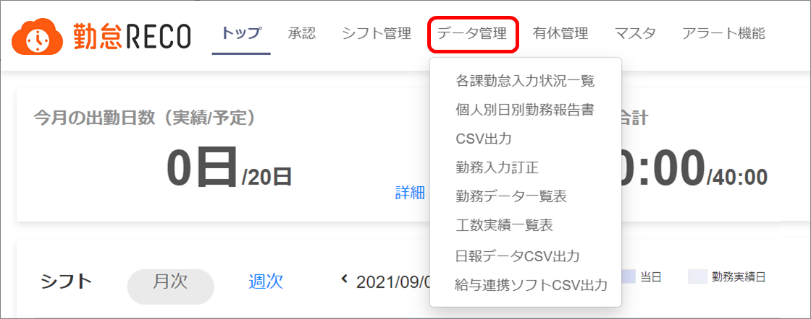
［各課勤怠入力状況一覧］
勤怠RECOに登録されている従業員の勤怠入力状況を1カ月単位で一覧表示します。部署別、従業員別に絞って表示することもできます。
詳しくは、「勤怠の入力状況を一覧表示する」を参照してください。
［個人別日別勤務報告書］
従業員別の日別勤務実績をエクセルファイルに書き出します。指定した期間の出退勤打刻時刻、休暇取得、残業、休日出勤などの状況が一覧で見ることができます。
詳しくは、「個人別日別勤務報告書を作成する」を参照してください。
［CSV出力］
期間と、その月の稼働出勤日数（出勤日数）、規定時間（1日の勤務時間）を入力すると、該当月に出勤している従業員の勤怠情報が出力されます。
詳しくは、「勤務実績をCSV出力する」を参照してください。
［勤務入力訂正］
入力済みの勤務実績を修正します。
詳しくは、「勤務実績を訂正する」を参照してください。
［勤務データ一覧表］
指定した期間の勤務データの詳細を出力します。
詳しくは、「勤務データ一覧表を作成する」を参照してください。
［工数実績一覧表］
指定した期間のプロジェクト別・従業員別・プロジェクト+従業員別の工数実績を一覧にまとめてダウンロードします。
詳しくは、「工数実績一覧表を作成する」を参照してください。
［日報データCSV出力］
指定した期間の特定従業員の日報データを出力できます。日報内のコメントや残業時間も出力されます。
詳しくは、「日報データをCSV出力する」を参照してください。
［給与連携ソフトCSV出力］
給与連携フォーマットマスタで作成した出力形式で、給与ソフトに連携するためのデータを作成します。
詳しくは、「給与ソフト連携データを出力する」を参照してください。
ご注意 |
［データ管理］のサブメニュー［個人別日別勤務報告書］・［CSV出力］・［勤務入力訂正］・［勤務データ一覧表］・［給与連携ソフトCSV出力］は人事担当者アカウント、システム管理者アカウントが操作可能です。 |
勤怠の入力状況を一覧表示する
勤怠RECOに登録されている従業員の勤怠入力状況を1カ月単位で一覧表示します。部署別、従業員別に絞って表示することもできます。
ご注意 |
勤怠の入力状況を一覧表示できるのは、課長級アカウント、人事担当者アカウント、システム管理者アカウントです。 |
-
［データ管理］をクリックし、［各課勤怠入力状況一覧］をクリックする
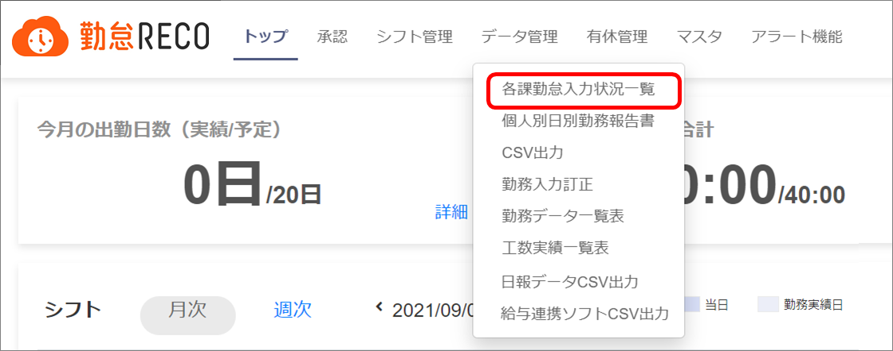
［各課入力状況一覧］画面が表示されます。
-
「期間」に、一覧表示する勤怠入力期間を入力する
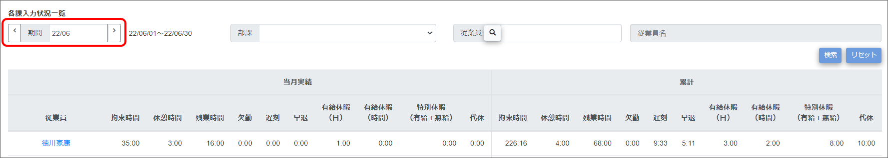
「＜」または「＞」をクリックして、表示したい期間を選択します。
-
必要に応じて「部課」または「従業員」を設定する
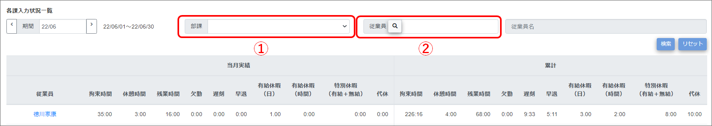
-
部課
対象者を部課で絞り込む場合に、ドロップダウンリストから部課を選択します。
-
従業員
対象者を従業員コードで絞り込む場合に、従業員コードを入力します。 のボタンをクリックすると、従業員コードのリストが表示されます。○をクリックして選択してください。
のボタンをクリックすると、従業員コードのリストが表示されます。○をクリックして選択してください。
ヒント |
検索を実行すると、設定した検索条件が記憶されます。［リセット］ボタンをクリックすると、設定した検索条件をすべてリセットできます。 |
-
［検索］ボタンをクリックする
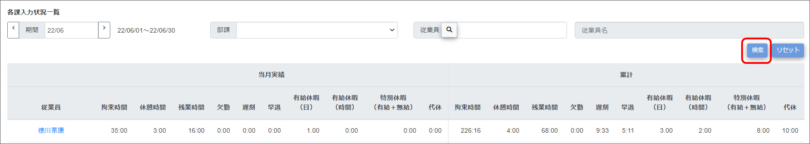
検索条件に該当する従業員が画面に一覧表示されます。
ヒント |
一覧の従業員名をクリックすると、日別勤務入力データが表示されます。
|
個人別日別勤務報告書を作成する
従業員別の日別勤務実績をエクセルファイルに書き出します。指定した期間の出退勤打刻時刻、休暇取得、残業、休日出勤などの状況が一覧で見ることができます。
ご注意 |
個人別日別勤務報告書を作成できるのは、人事担当者アカウントとシステム管理者アカウントです。 |
-
［データ管理］をクリックし、［個人別日別勤務報告書］をクリックする
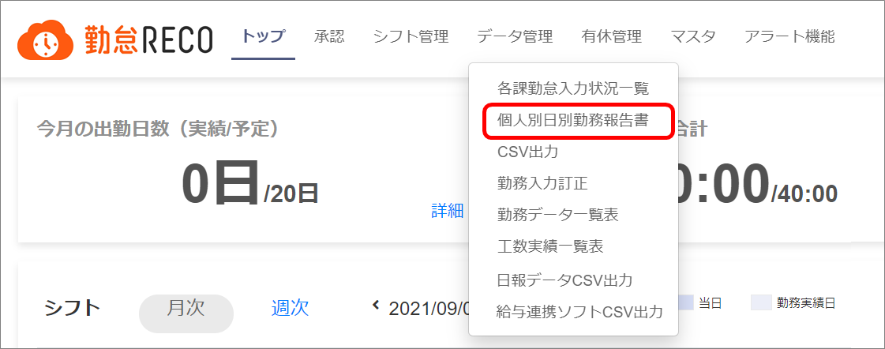
［個人別日別勤務報告書］画面が表示されます。
-
「期間」に、報告書を作成する勤務期間を入力する
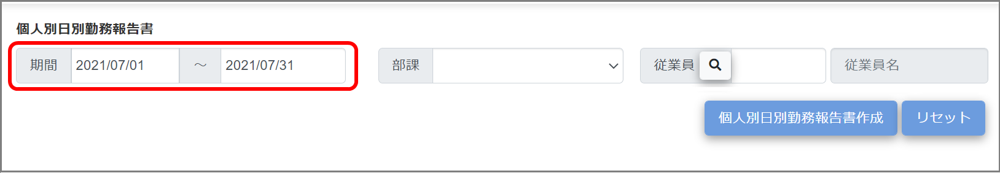
カレンダーから年月日を選択します。
-
必要に応じて「部課」または「従業員」を設定する
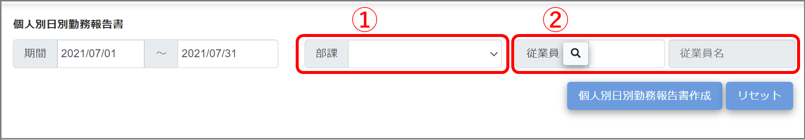
-
部課
対象者を部課で絞り込む場合に、ドロップダウンリストから部課を選択します。
-
従業員
対象者を従業員コードで絞り込む場合に、従業員コードを入力します。のボタンをクリックすると、従業員コードのリストが表示されます。○をクリックして選択してください。
ヒント |
検索を実行すると、設定した検索条件が記憶されます。［リセット］ボタンをクリックすると、設定した検索条件をすべてリセットできます。 |
-
［個人別日別勤務報告書作成］ボタンをクリックする
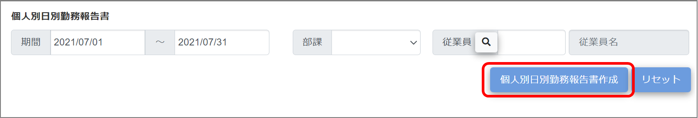
個人別日別勤務報告書のエクセルファイルがzip形式でダウンロードされます。
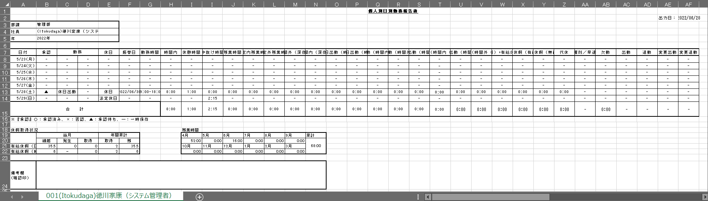
勤務実績をCSV出力する
指定した月の稼働出勤日数（出勤日数）、規定時間（1日の勤務時間）を入力し、該当月に出勤している従業員の勤怠情報をcsvデータで出力します。給与システムと連携が簡単にできます。
ご注意 |
日報勤怠をCSV出力できるのは、人事担当者アカウントとシステム管理者アカウントです。 |
-
［データ管理］をクリックし、［CSV出力］をクリックする
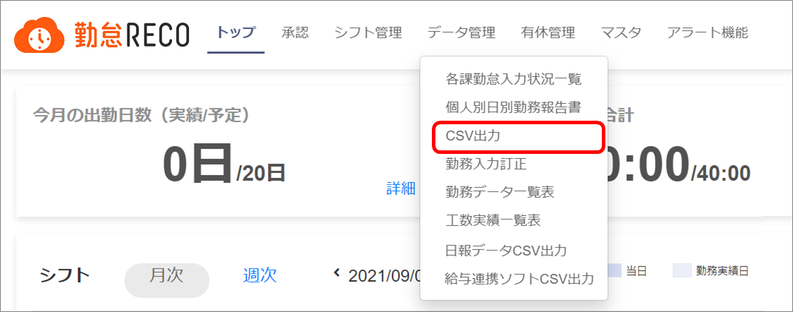
［CSV出力］画面が表示されます。
-
「期間」「勤務日」「規定時間」をすべて入力する
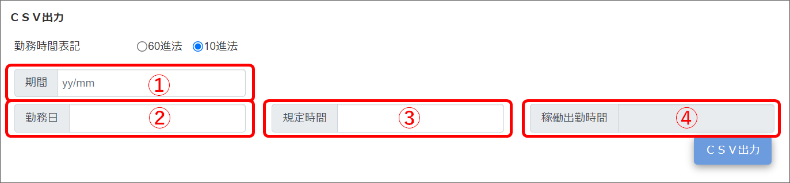
-
期間
カレンダーから年月を選択します。
-
勤務日
その月の稼働出勤日数を入力します。
-
規定時間
1日の勤務時間を入力します。
-
稼働出勤時間
勤務日と規定時間を入力すると、稼働出勤時間が表示されます。
ヒント |
「勤務時間表記」は、共通マスタの設定が初期値として反映されています。 |
-
［CSV出力］ボタンをクリックする
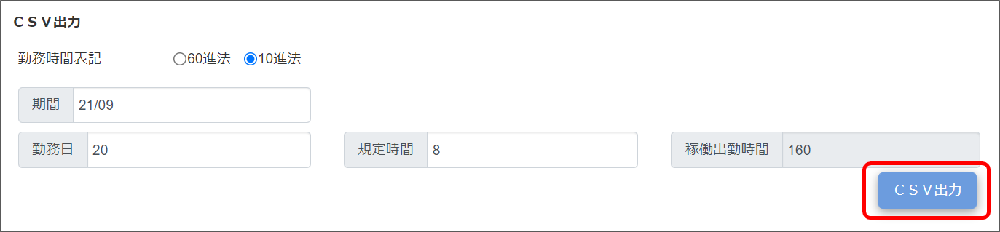
勤怠実績のCSVデータがダウンロードされます。
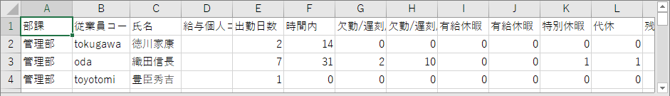
勤務実績を訂正する
勤務実績を修正します。
-
［データ管理］をクリックし、［勤務入力訂正］をクリックする
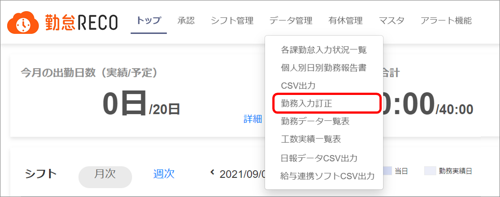
［勤務入力訂正］画面が表示されます。
-
「期間」に、訂正する勤務入力の年月を入力する
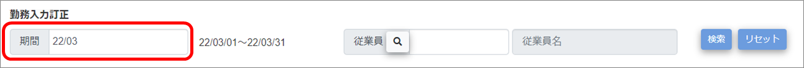
カレンダーから年月日を選択します。
-
勤務入力を訂正する従業員コードを入力する
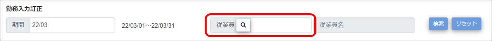
をクリックすると、従業員コードのリストが表示されます。○をクリックして選択してください。
ヒント |
検索を実行すると、設定した検索条件が記憶されます。［リセット］ボタンをクリックすると、設定した検索条件をすべてリセットできます。 |
-
［検索］ボタンをクリックする
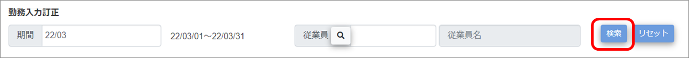
検索した従業員の勤務入力データが表示されます。
-
修正したい日を選択する
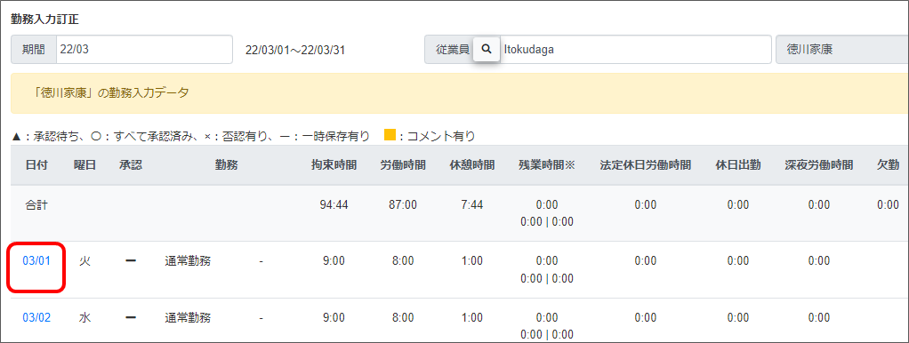
選択した日の勤務入力詳細が表示されます。
-
データを修正する
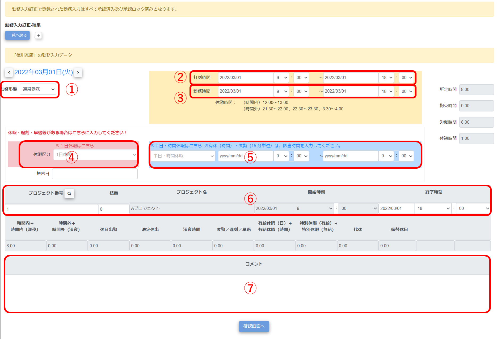
-
勤務形態
会社の定める勤務形態を選択します。
-
打刻時間
1分単位で打刻時間を修正できます。
-
勤務時間
勤務時間を〇分単位にまるめた時間を入力します（単位はシステムの設定によります）。
【例】 勤務時間が15分単位の場合
打刻 8:47〜18:25 → 勤務時間 9:00〜18:15
【例】 9:00から18:00の時間内勤務が15分単位、時間外勤務（残業など）が1分単位の場合
打刻 8:47〜18:25 → 勤務時間 9:00〜18:25
-
休暇区分
有休、振替休日、代休、欠勤など、勤務実績がなかった日の休暇等の区分を選択します。
ここを選択した場合、打刻時間は記入できません。
-
半日・時間休暇
半日有休、時間有休、時間単位での欠勤などを取得した場合に選択する区分です。
取得した時間も記載します。
-
プロジェクト明細
どのようなプロジェクトで何時間作業したかを入力します。
をクリックするとをクリックすると、プロジェクトのリストが表示されるので、対象の○をクリックして選択してください。プロジェクト名が「勤務入力訂正-編集」画面に反映されます。
-
コメント
プロジェクト明細に関するコメントを記入します。
-
［確認画面へ］をクリックする
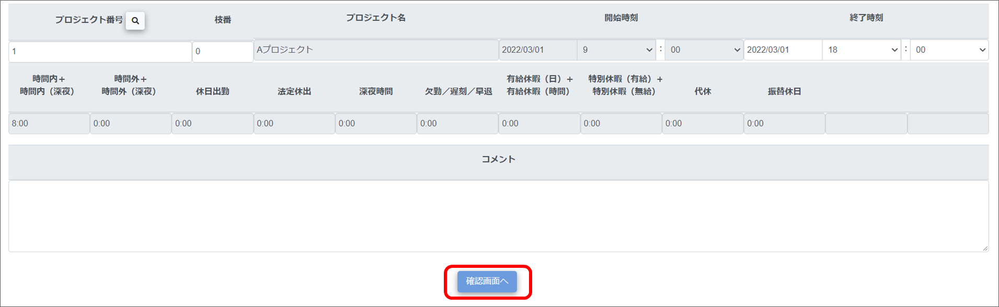
-
修正内容を確認する
ご注意 |
「勤務入力訂正」で登録された勤務入力は、すべて承認済みとなり、承認もロックされます。登録前に修正内容をよく確認してください。 |
-
［登録する］をクリックする
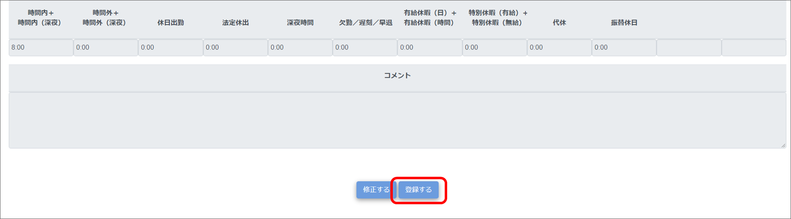
画面上部に「登録が完了しました。」とメッセージが表示され、修正した勤務実績が登録されます。
勤務データ一覧表を作成する
指定した期間の勤務データの詳細を出力します。
ご注意 |
勤務データ一覧表を作成できるのは、人事担当者アカウントとシステム管理者アカウントです。 |
-
［データ管理］をクリックし、［勤務データ一覧表］をクリックする
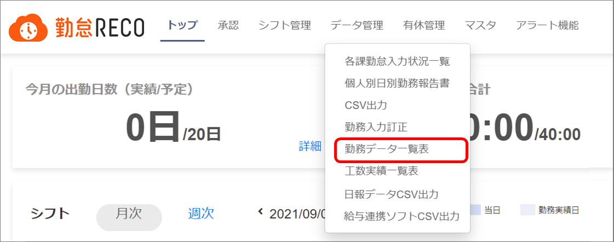
［データ出力］画面が表示されます。
-
「期間」に、一覧表を作成する期間を入力する
カレンダーから選択します。
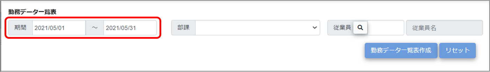
-
必要に応じて「部課」または「従業員」を設定する
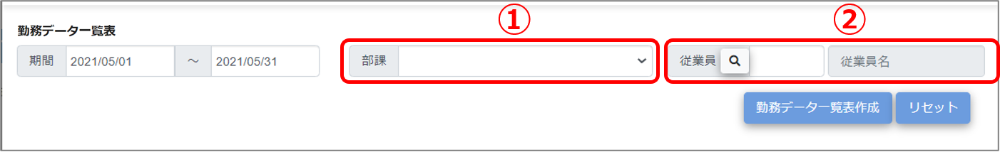
-
部課
対象者を部課で絞り込む場合に、ドロップダウンリストから部課を選択します。
-
従業員コード
対象者を従業員コードで絞り込む場合に、従業員コードを入力します。をクリックすると、従業員コードのリストが表示されます。○をクリックして選択してください。
ヒント |
検索を実行すると、設定した検索条件が記憶されます。［リセット］ボタンをクリックすると、設定した検索条件をすべてリセットできます。
|
-
［勤務データ一覧表作成］ボタンをクリックする
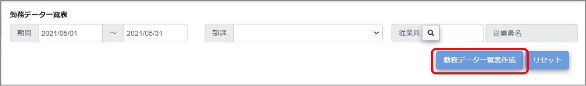
勤務実績データ一覧のエクセルファイルがダウンロードされます。
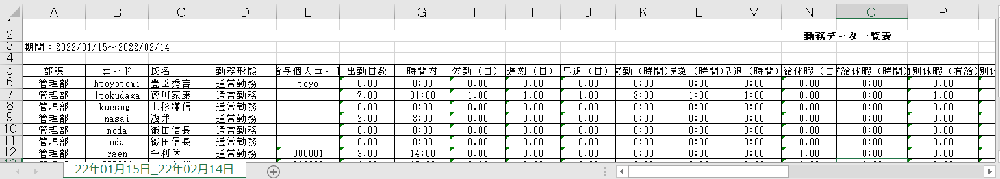
工数実績一覧表を作成する
指定した期間のプロジェクト別・従業員別・プロジェクト+従業員別の工数実績を一覧にまとめてダウンロードします。
工数実績一覧表は誰でも作成できます。
プロジェクトごとの総労働時間やそのプロジェクトの情報を出力できます。
-
［データ管理］をクリックし、［工数実績一覧表］をクリックする
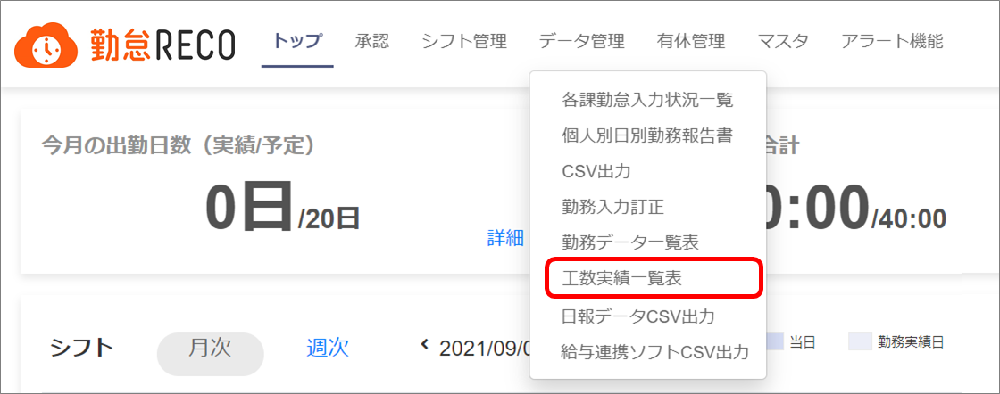
［工数実績一覧］画面が表示されます。
-
検索条件を入力する
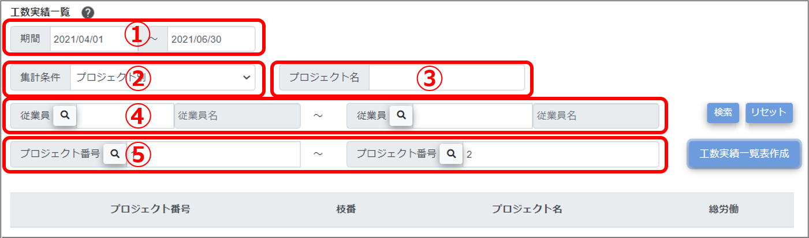
-
期間
出力したい工数実績の期間を入力します。カレンダーから選択します。期間だけを指定した場合は、その期間に工数入力があったプロジェクトすべての工数一覧を出力します。
-
集計条件
ドロップダウンリストから「プロジェクト別」「従業員別」「プロジェクト別従業員別」を選択します。
-
プロジェクト名
プロジェクト名の一部を入力すると、その文字列を含むプロジェクト名を検索します。
特定のプロジェクトの工数を確認したい場合は、プロジェクト名またはプロジェクト番号を指定してください。
-
従業員
従業員コードを入力します。をクリックすると、従業員コードのリストが表示されます。○をクリックして選択してください。
開始と終了の従業員コードを入力すると、範囲指定検索を行います。開始の従業員コードだけが入力されている場合は、完全一致検索を行います。
特定の従業員の工数を確認したい場合は、従業員コードを指定してください。
-
プロジェクト番号
プロジェクト番号を入力します。をクリックすると、プロジェクトのリストが表示されるので、対象の○をクリックして選択してください。
開始と終了のプロジェクト番号を入力すると、範囲指定検索を行います。開始のプロジェクト番号だけが入力されている場合は、完全一致検索を行います。
特定のプロジェクトの工数を確認したい場合は、プロジェクト名またはプロジェクト番号を指定してください。
ヒント |
検索を実行すると、設定した検索条件が記憶されます。［リセット］ボタンをクリックすると、設定した検索条件をすべてリセットできます。 |
-
［検索］ボタンをクリックする
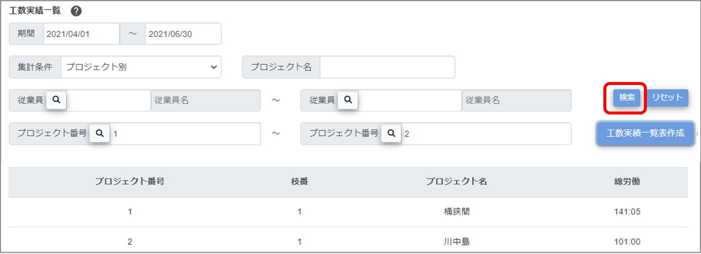
該当するプロジェクト／従業員が一覧表示されます。
-
［工数実績一覧表作成］ボタンをクリックする
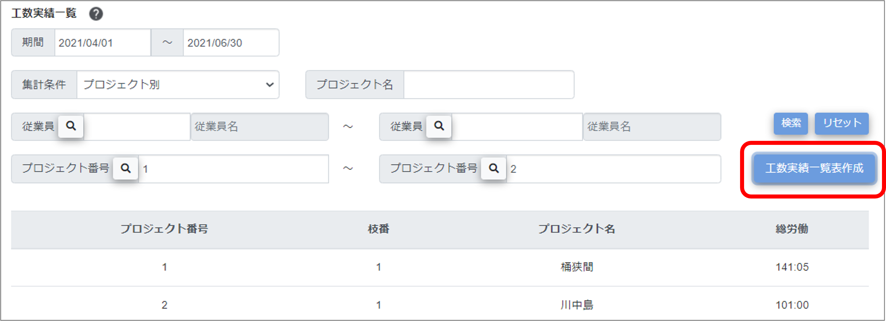
工数実績一覧表のエクセルファイルがダウンロードされます。
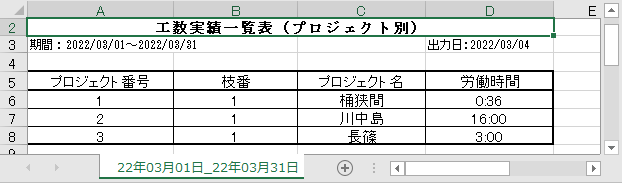
日報データをCSV出力する
従業員の特定期間の日報データを出力できます。
ヒント |
日報内のコメントや残業時間も出力されます。
日報データは権限による制限はなく、「個人用」画面からもCSV出力できますが、一般権限の従業員が出力できるのは、自分の日報データのみです。
個人用画面からの出力方法について詳しくは、「勤怠RECO［個人用］操作マニュアル」をご覧ください。 |
-
［データ管理］をクリックし、［日報データCSV出力］をクリックする
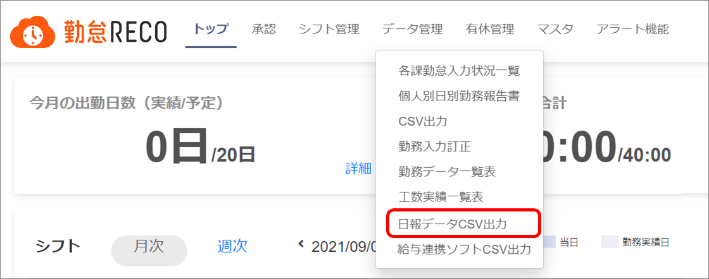
［日報データCSV出力］画面が表示されます。
-
「期間」に、日報を出力する期間を入力する
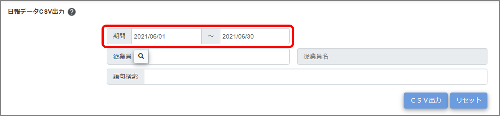
-
必要に応じて「従業員」を設定する
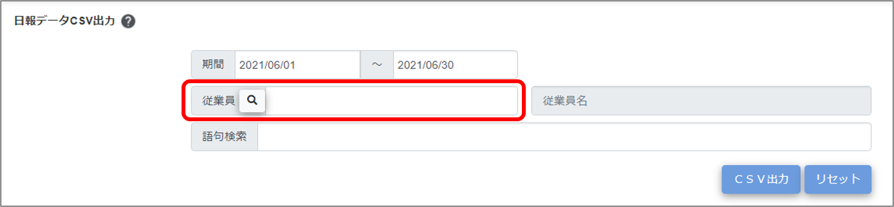
従業員コードを入力します。のボタンをクリックすると、従業員コードのリストが表示されます。○をクリックして選択してください。
-
必要に応じて、日報内の特定の語句を「語句検索」に入力する
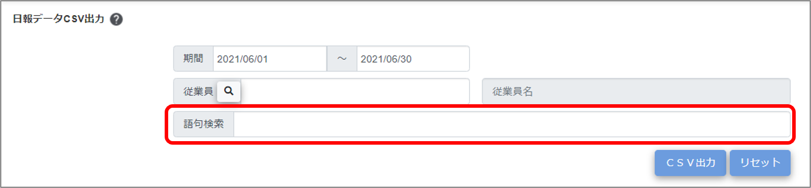
-
［CSV出力］ボタンをクリックする
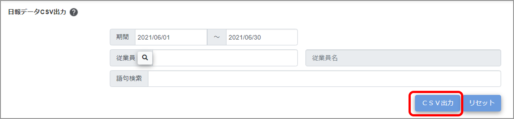
日報データのCSVファイルがダウンロードされます。
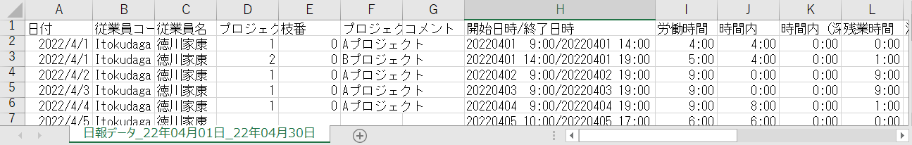
給与ソフト連携データを出力する
［給与連携フォーマットマスタ］に登録した形式で、勤怠データを出力できます。
-
［データ管理］をクリックし、［給与連携ソフトCSV出力］をクリックする
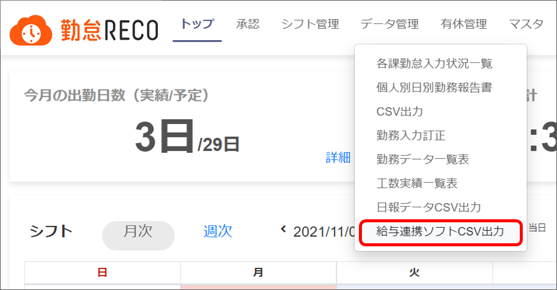
［給与連携ソフトCSV出力］画面が表示されます。
-
「期間」を入力し、「給与連携フォーマット」を選択する
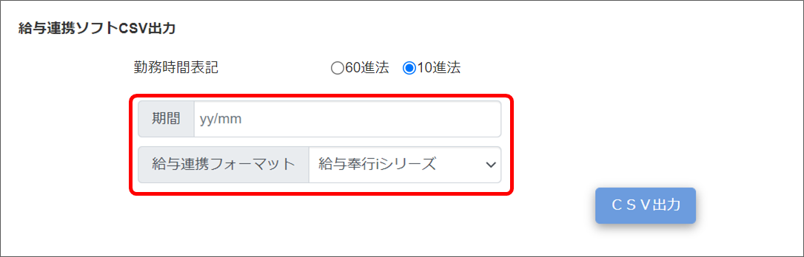
ヒント |
「勤務時間表記」は、共通マスタの設定が初期値として反映されています。 |
-
［CSV出力］ボタンをクリックする
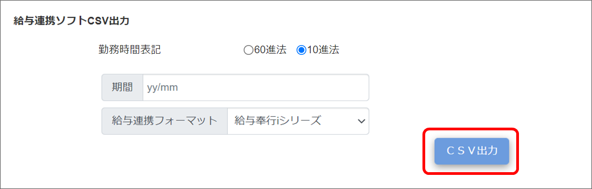
給与ソフト連携用のCSVデータがダウンロードされます。
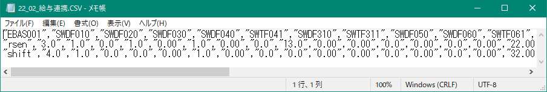